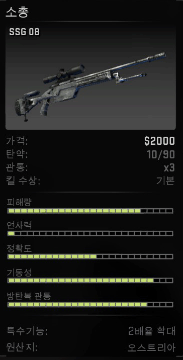

시작 하기에 앞서 킬 수상에서 %가 붙는것도 있고, 기본도 있는데 기본은 300달러이며 %는 "300X해당%" 입니다.
두 팀 모두 다 살수 있는 무기에 대해 알아봅시다
이번 작에서 새로 나온 p250입니다.
13/52의 넉넉한 탄창에, 연사력도 좋아 제가 거의 사용하는 권총입니다.(cz75 대체가능)
aug랑 sg553를 상향 패치할때 같이 나온 cz75입니다.
저렇게 보면 'p250이랑 뭐가 달라'라고 보여지지만, 실제는 엄청난 연사속도입니다. 대신 탄약이 정말 없어서 다른걸 주어야 합니다. (p250 대체가능)
권총의 파괴자 데저트 이글입니다.
7발이지만, 13년 1월 패치때 몸통 데미지를 80으로 줘서 엄청난 사기무기가 되었다가 데미지랑 정확도 하향으로 살짝 안좋아진 이글입니다.하지만 하향 되도 3발이면 끝내버리는 무기로 대부분 이 무기를 좋아할것입니다. 단, 반동은 엄청나게 안 좋습니다.
이번 작에서 공용 무기가 된 듀얼 베레타입니다.
유일하게 양손으로 발사하는 권총이며 총이 2개인 만큼, 많은 탄창이 있습니다.
반동이 낮아졌지만, 그 만큼 피해량도 같이 낮아졌습니다.전작의 m3샷건을 대체한 노바입니다.
이게 샷건인지, 아니면 저격총인지라고 생각할수도 있는 꽤 좋은 정확도에 흩어짐이 적습니다만,
펌핑이 느려서 한발을 놓치면 잡힐수도 있으니깐 주의해야합니다.(샷건이므로 데미지는 생략하겠습니다.)계속 카스 시리즈에 생존한 샷건인 자동 샷건입니다.
한 발당 데미지는 낮아도, 다른 샷건들은 펌핑을 해야 하는 반면에, 이 샷건만 유일하게 바로 쏠 수 있습니다.
즉, 상대방 샷건이 1발을 쏠 때, 난 2발을 쏠수 있습니다.

기관총 종류인 m249입니다.
기관총인 만큼, 탄창은 많지만, 그 만큼 반동도 높아 막 쏘면 먼저 죽을수도 있습니다.
그리고 데미지도 높지만, 재장전 시간이 낮아서 조심 해야 하고, 느려서 들고 다니다간 느리게 가고 있는 자신을 볼 수 있습니다.
기관총계의 사기무기 네게브입니다.
탄창 1개에 150발이나 있어서, 엄청난 총알이 있습니다.
모든 무기들중 가장 피해량이 높은 무기이고, 연사 속도가 엄청나게 빠릅니다.
하지만, 그 만큼 반동이 엄청나게 높고, 재장전 시간이 6초나 걸리면서, 모든 무기들중 가장 비쌉니다.
전작의 mp5를 대체한 mp7입니다.
빠른 연사 속도에, 가장 가벼운 무기이지만, 피해량이 많이 낮고, 많이 흩어집니다.
전작에서는 많이 안 쓰였지만, 이번 작에서 많이 쓰는 무기가 된 P90입니다.
일단, 많은 탄창에 연사 속도가 빠릅니다. 반동이 있어도, 그건 조절을 하면 되므로 좋아요..
하지만, 다른 기관단총에 비해서 비싸고 반동이 높습니다.
기관단총에서 가장 높은 데미지를 가지고 있는 ump45입니다.
일단 싼 가격에 높은 데미지, 다른 기관단총에 비해 중거리에서도 정확도가 좋습니다.
단점은 작은 탄창, 다른 기관단총에 비해서 낮은 연사속도 입니다.
빠른 재장전에, 낮은 반동, 가벼운 무기인 pp비존입니다.
이 무기의 유일한 단점은 진짜로 안 좋은 피해량입니다. 헬멧 사면 머리를 조준해도 50밖에 안 답니다....

싸지만, 무시는 못할 저격총입니다.
가볍고, 정확도는 말 할 필요도 없습니다.
단점은 awp는 1발에 잡을걸 ssg08은 2발을 맞춰야 잡을수 있습니다.
극강의 원샷 원킬 그냥 스치면 잡는 무기 awp 오퍼입니다.
데미지는 쏘면 상대방은 이미 누워있습니다.
정확도는 저격총이므로 넘어갑니다.
단점은, 들면서 이동을 할 경우에는 느린 이동속도가 뭔지를 직접 체험을 할 수 있습니다.